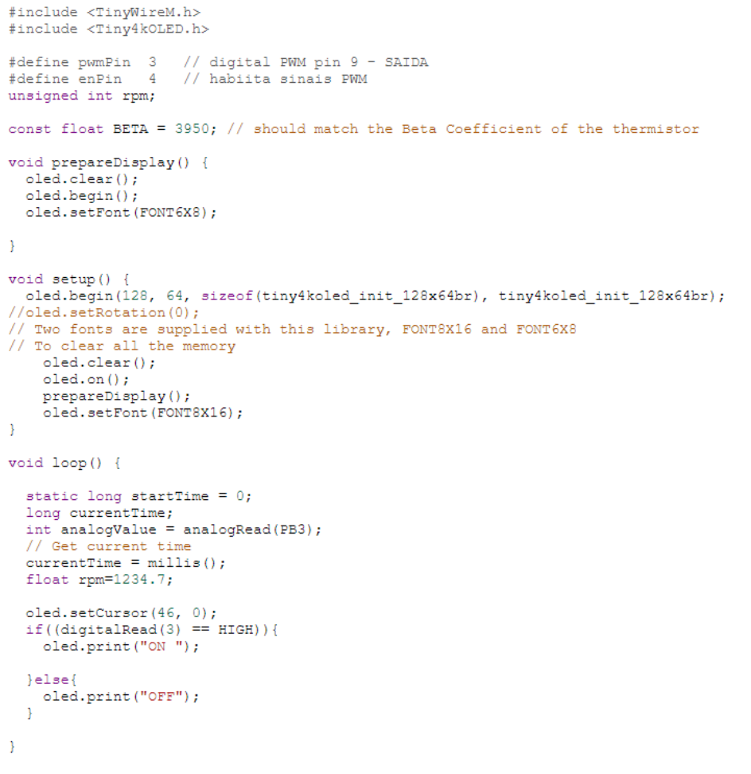

Portafolio de Actividades
Laboratorio de Elementos Programables I
Departamento de Ciencias e Ingenierías | Universidad Iberoamericana Puebla, México.
Pantalla OLED

- Resumen -
En esta práctica de laboratorio, aprenderemos a conectar una pantalla OLED a un Arduino o un Attiny85. Las pantallas OLED son pantallas de cristal líquido orgánico que consumen menos energía que las pantallas LCD tradicionales.
- Introducción -
En esta práctica, aprenderemos a conectar una pantalla OLED a un Arduino o un Attiny85. Las pantallas OLED son una excelente opción para proyectos que requieren una pantalla pequeña y compacta, ya que consumen menos energía que las pantallas LCD tradicionales. En esta práctica, utilizaremos una pantalla OLED de 128x64 píxeles. La pantalla tiene cuatro pines: VCC, GND, SDA y SCL. VCC y GND se conectan a las fuentes de alimentación de 5 V y 0 V, respectivamente. SDA y SCL se utilizan para la comunicación I2C.
- Materiales -
Placa Arduino UNO
Push Buttons
Cables Macho Macho
Microcontrolador Attiny85
Pantalla OLED
- Desarrollo -
El desarrollo de la práctica consistió en utilizar la conexión I2C para poder conectar la pantalla OLED al Attiny, un proceso muy sencillo.

- Resultados -
A continuación se prensentan los resultados, videos de cómo sirve la pantalla OLED.
- Conclusiones -
En resumen, la práctica demostró que es posible integrar una pantalla OLED, un botón y un microcontrolador ATtiny85 para crear un sistema que muestre el estado del botón en la pantalla. El entorno de desarrollo Arduino UNO se utilizó para facilitar la integración de estos componentes. La práctica también demostró que los microcontroladores de menor escala, como el ATtiny85, pueden ser útiles para proyectos que requieren eficiencia y economía de recursos. En general, la práctica fue una experiencia valiosa que enseñó a los participantes cómo integrar componentes electrónicos para crear sistemas funcionales y visualmente informativos.
- Referencias -
TinkerCad | From mind to design in minutes. (s.f.-b). Tinkercad. https://www.tinkercad.com/classrooms/kKxYmpPDJXs/activities/8e6rkk3tuvu